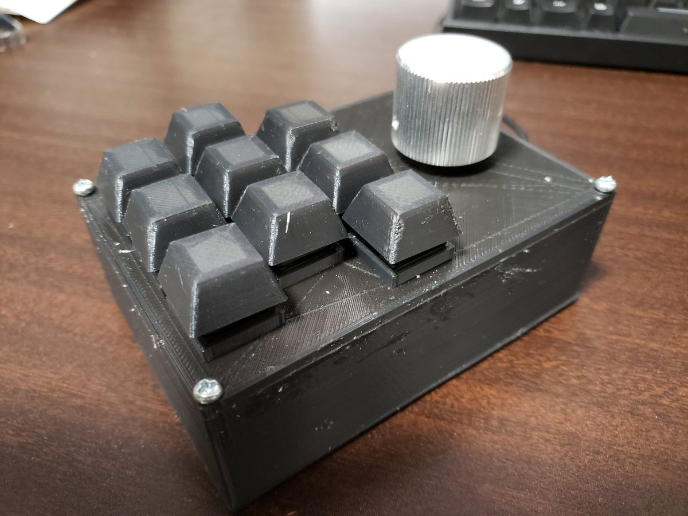
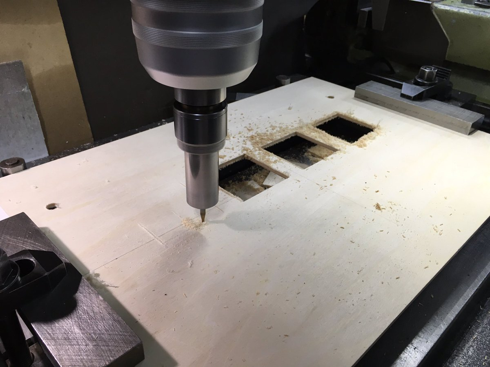
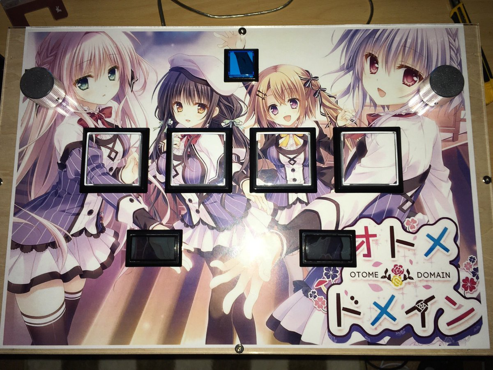
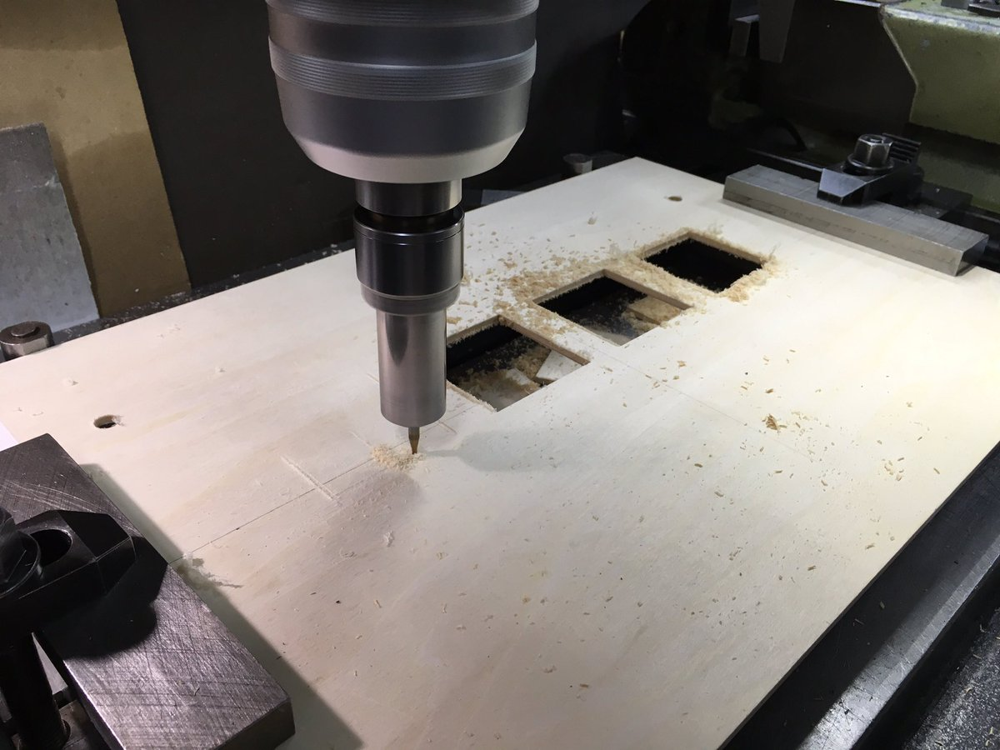
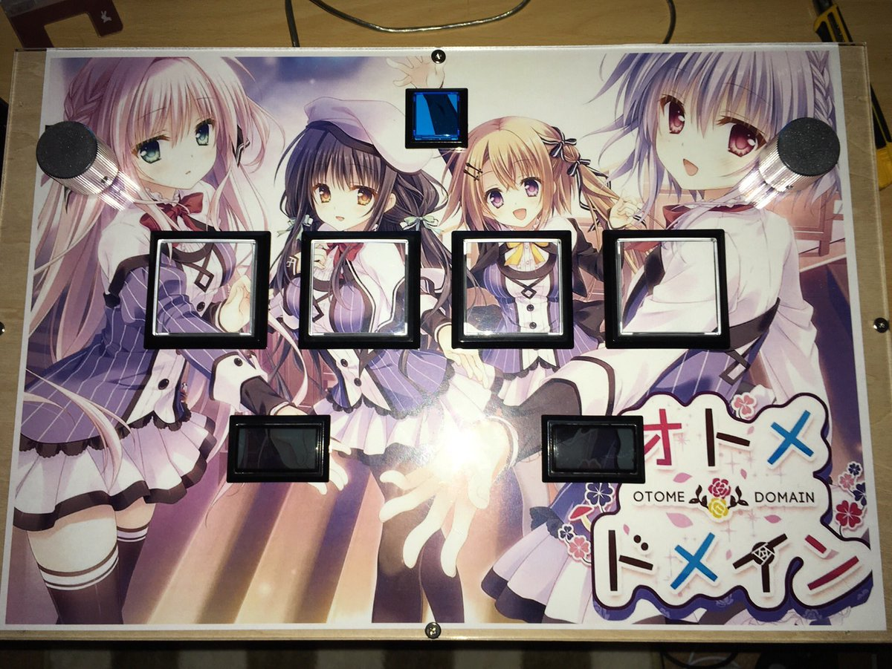

作ったもの
見出しをクリックで詳細が表示されます。
ニキシー管という1960年代ごろまで使われていた数字や記号を表示する部品で時計を作りました。
リレー10個で構成されるデコーダ回路を8基搭載しています。リレーの総数は80個です。

REVIVE-USBのクローンを自作してPCと接続が可能なキーボードを作りました。
ロータリーエンコーダを用いて回転が可能なつまみを実装しました。
キートップと外枠はFusion360で設計し、3Dプリンタで出力しました。

SOUND VOLTEXという音ゲーのコントローラを自作しました。
制御はREVIVE USBを使用しています。
ボタンは三和ボタン、つまみはロータリーエンコーダを使用しています。
 




部活の電子工作教室のために作成しました。
電子工作初心者でも作りやすいように細かい部品を使わずに、できるだけはんだ付けの箇所が少なくなるように設計しました。
4つのボタンでタイマーの秒数を設定、スタート、ストップ、リセットができるようにしました。
バーLEDを用いることで省スペース化をしました。バーの1本が30秒で対応しています。


細々とした作品や3Dプリンタで出力した小物などです。
落とした単位数を表示することで自己を戒めます。
数値の変更は上部のDIPスイッチで各セグメントごとに点灯/消灯を切り替えて設定します。


深さを変えることで醤油の濃さを変え、絵を表現する醤油皿
リングフィットのコントローラをかけるやつ
机にティッシュを掛けてスペースの削減化を図ったティッシュホルダー